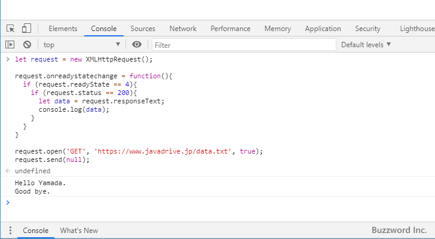
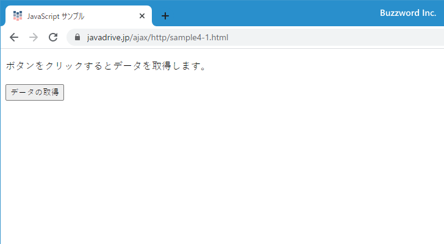

XMLHttpRequestオブジェクトを使った非同期通信を行う
XMLHttpRequest オブジェクトを使用することで Ajax を使った非同期通信を行うことができます。ここでは Ajax による非同期通信を行うために XMLHttpRequest オブジェクトの作成し、サーバへリクエストを送信したあと、サーバからレスポンスを受信するまでの方法について解説します。
目次
XMLHttpRequestオブジェクトを作成する
最初に XMLHttpRequest オブジェクトの作成から開始します。作成にはコンストラクタを使い次のように行います。
let request = XMLHttpRequest();
XMLHttpRequest オブジェクトが作成できました。
HTTPリクエストを初期化する(open)
続いて XMLHttpRequest オブジェクトの open メソッドを使って HTTP リクエストの初期化を行います。書式は次の通りです。
open(メソッド, URL[, 非同期[, ユーザー名[, パスワード]]])
最初の引数には HTTP リクエストメソッドを指定します。 'GET' 、 'POST' 、 'HEAD' 、 'DELETE' などの値を文字列で指定します。主に使用されるのは 'GET' と 'POST' で、サーバから指定した URL でデータを取得する場合は 'GET' 、サーバの指定した URL に対して何らかの処理(例えばサーバへファイルをアップロードしたり、データベースを更新したりします)を行う場合は 'POST' を使います。
2 番目の引数にはリクエストの送信先となる URL を文字列で指定します。
3 番目の非同期通信を行うか同期通信を行うのかを論理値で指定します。非同期通信の場合は true 、同期通信の場合は false です。デフォルトの値は true のため引数を省略した場合は非同期通信となります。
4 番目と 5 番目の引数には認証が必要となる場合のユーザー名とパスワードを文字列で指定します。
今回はサンプルとして指定した URL にあるテキストファイルを GET メソッドを使って非同期でサーバから取得してみます。次のように記述します。
let request = new XMLHttpRequest();
request.open('GET', 'https://www.example.com/data.txt', true);
※ 3 番目の引数の true は省略しても同じです。
サーバからのレスポンスの受信が完了した時にコールバック関数を呼びだす
同期通信の場合であればサーバに対してリクエストを送信すると、サーバからのレスポンスが返ってくるのを待って次の処理へ移りますが、非同期通信の場合はサーバへリクエストを送信するとすぐに次の処理へ移ります。
そこで非同期通信の場合には、サーバからのレスポンスの受信が完了した時に発生するイベントに対するイベントハンドラを利用します。イベントハンドラとは指定したイベントが発生した時にコールバック関数を呼びだして実行します。
XMLHttpRequest.readyState プロパティは XMLHttpRequest オブジェクトの状態を表すプロパティで、次の値をとります。
0 未初期化(openメソッドが呼ばれていない) 1 ロード中(openメソッドは済み、sendメソッドが未) 2 ロード済(sendメソッドは済みでレスポンス待ち) 3 受信中(レスポンス受信中) 4 完了(レスポンスの受信完了)
例えば XMLHttpRequest オブジェクトを作成したあと open メソッドが呼ばれていない場合 readyState プロパティには 0 が設定されています。そして open メソッドが呼ばれると readyState プロパティは 1 に変わります。
次のサンプルを見てください。
let request = new XMLHttpRequest();
console.log(request.readyState);
request.open('GET', 'https://www.example.com/data.txt', true);
console.log(request.readyState);
>> 0
>> 1
※ 実際に試す場合は URL の部分を正規の URL に書き換えて試しています。以下のサンプルも同様です。
XMLHttpRequest オブジェクトを作成直後には readyState プロパティは 0 となっており、 open メソッドを実行すると readyState プロパティは 1 となっています。
サーバにリクエストを送信し、サーバからのレスポンスの受信が完了すると readyState プロパティは 4 となります。そこで readyState プロパティの値が変更された時に、 readyState プロパティの値を確認し 4 となっているかどうか確認すればいいのですが、この時使用されるのが XMLHttpRequest.onreadystatechange プロパティです。 onreadystatechange プロパティはイベントハンドラで、あらかじめ登録しておいたコールバック関数が readyState プロパティの値が変更した時に呼び出されます。
onreadystatechange プロパティに対するコールバック関数の設定は次の書式に従って記述します。
XMLHttpRequest.onreadystatechange = コールバック関数
それでは先ほどのサンプルをイベントハンドラを使った方法で書き換えてみます。
let request = new XMLHttpRequest();
request.onreadystatechange = function(){
console.log(request.readyState);
}
request.open('GET', 'https://www.javadrive.jp/data.txt', true);
>> 1
open メソッドを実行されると readyState プロパティが 0 から 1 に変更されます。この変更に伴って発生したイベントによって、 onreadystatechange プロパティにあらかじめて設定したおいたコールバック関数が呼び出されて readyState プロパティの値がコンソールに出力されます。
今回はサーバからのレスポンスの受信を完了した時に処理を行いたいので、 readyState プロパティの値が変更されてコールバック関数が呼び出されたときに、 readyState プロパティの値を調べて 4 だった場合に受信したデータの処理を記述します。
let request = new XMLHttpRequest();
request.onreadystatechange = function(){
if (request.readyState == 4){
// 受信したデータの処理を記述する
}
}
request.open('GET', 'https://www.example.com/data.txt', true);
サーバとの通信が正常に行われたかどうかを確認する
サーバからのレスポンスの受信が完了した場合でも、それはサーバから目的とするデータをレスポンスとして受信したのか、それともサーバが見つからなかったり別の理由でエラーを受信したのかは分かりません。その為、サーバとの通信が正常に行われたのかどうか HTTP ステータスコードを確認します。
XMLHttpRequest.status プロパティには HTTP ステータスコードの値が整数の値として格納されています。主な HTTP ステータスコードは次のとおりです。
200 OK 403 Forbidden 404 Not Found 500 Internarl Server Error 503 Service Unavailable
※ その他のステータスコードの一覧については「Hypertext Transfer Protocol (HTTP) Status Code Registryをご参照ください。
正常に通信が行われた場合は 200 が返ります。それ以外の場合は何らかのエラーが発生しています。(なお send メソッドが送信される前は 0 が格納されています)。
サーバからのレスポンスの受信が完了したあとで、 status プロパティの値を調べて 200 だった場合に受信したデータの処理を記述します。
let request = new XMLHttpRequest();
request.onreadystatechange = function(){
if (request.readyState == 4){
if (request.status == 200){
// 受信したデータの処理を記述する
}
}
}
request.open('GET', 'https://www.example.com/data.txt', true);
受信したデータを取り出す
今回のサンプルでは GET メソッドを使ったサーバからデータを受信しますので、受信したデータを利用できるように変数などに格納します。受信したデータを取り出すには、データの種類に応じて次の 3 つのプロパティを参照します。
XMLHttpRequest.responseText XMLHttpRequest.responseXML XMLHttpRequest.response
responseText プロパティは受信するデータがテキストの場合に使用します。 responseXML プロパティは受信するデータが XML または HTML をあらわす Document オブジェクトの場合に使用します。 response プロパティは XMLHttpRequest.responseType プロパティで指定した形式のデータとして受信したデータを扱います。
今回はテキストデータを取得するために responseText プロパティを参照して取得したデータを変数に取り出します。( responseXML プロパティや response プロパティの使い方は別のページで解説予定です)。
let request = new XMLHttpRequest();
request.onreadystatechange = function(){
if (request.readyState == 4){
if (request.status == 200){
let data = request.responseText;
console.log(data);
}
}
}
request.open('GET', 'https://www.example.com/data.txt', true);
HTTPリクエストをサーバーに送信する(send)
受信するデータの処理について記述が終わりましたので、 XMLHttpRequest オブジェクトの send メソッドを使ってサーバにリクエストを送信します。書式は次の通りです。
send(データ)
引数にはリクエストを送信するときにサーバに送るデータを指定します。 GET メソッドを使用する場合は通常データはサーバに送信しないので null を指定します。
let request = new XMLHttpRequest();
request.onreadystatechange = function(){
if (request.readyState == 4){
if (request.status == 200){
let data = request.responseText;
console.log(data);
}
}
}
request.open('GET', 'https://www.example.com/data.txt', true);
request.send(null);
これで GET メソッドを使ってサーバからテキストデータを取得するための Ajax を使った非同期通信のコードが完成です。
サーバから受信したテキストをHTMLページ内に表示する
サーバからテキストデータを受信したあと、 HTML ページ内にあらかじめ用意しておいた div 要素や p 要素の値としてテキストデータを表示するには次のように行います。
まず表示するテキストを表示する要素を HTML ページ内に記述します。要素の内容は空でも初期値を表示しておいても構いません。
<!DOCTYPE html>
<html lang="ja">
<head></head>
<body>
<p>
ボタンをクリックするとデータを取得します。
</p>
<div id="result"></div>
</body>
</html>
「<div id="result"></div>」の箇所が受信したテキストを表示する場所です。あとでノードを取得するための識別子として<div>要素には id="result" が設定されています。
書き換える方法は DOM を用いて対象となるノードを取得し、 innerHTML プロパティで値を書き換えます。(詳しくは「IDを指定してノードへアクセス」を参照して下さい)。
let node = document.getElementById("result");
node.innerHTML = request.responseText;
このコードを受信したデータの処理を記述するところに記述します。実際のサンプルはこのあとの「Webページを使ったテスト」を参照されてください。
コンソールを使ったテスト
それでは Ajax を使った非同期通信で実際にデータを取得してみます。サーバのルートディレクトリに次のような テキストを入力した data.txt というファイルを作成しアップロードしておきます。
Hello Yamada. Good bye.
次にブラウザでリクエストを送信する URL と同じ URL のいずれかのページにアクセスしたあとで、コンソールを開き次のように実行してください。
let request = new XMLHttpRequest();
request.onreadystatechange = function(){
if (request.readyState == 4){
if (request.status == 200){
let data = request.responseText;
console.log(data);
}
}
}
request.open('GET', 'https://www.example.com/data.txt', true);
request.send(null);
>> Hello Yamada.
>> Good bye.

open メソッドの引数に指定した URL が示すファイルに記述された内容をテキストデータとして取得し、コンソールに出力しました。
Webページを使ったテスト
次に Web ページ上のボタンをクリックしたら、サーバからデータを取得し Web ページ上に表示するサンプルを試してみます。次のような HTML ページを作成し、取得するデータと同じドメイン上にアップロードしました。
<!DOCTYPE html>
<html lang="ja">
<head>
<meta charset="UTF-8">
<title>JavaScript サンプル</title>
</head>
<body>
<p>
ボタンをクリックするとデータを取得します。
</p>
<form>
<input type="button" value="データの取得" onClick="getData()">
</form>
<div id="result"></div>
<script>
function getData(){
let request = new XMLHttpRequest();
request.onreadystatechange = function(){
if (request.readyState == 4){
if (request.status == 200){
let node = document.getElementById("result");
node.innerHTML = request.responseText;
}
}
}
request.open('GET', 'https://www.example.co/data.txt', true);
request.send(null);
}
</script>
</body>
</html>
ブラウザから先ほどの HTML ページをアップロードした Web ページにアクセスし、ページに表示されたボタンをクリックしてください。

open メソッドの引数に指定した URL が示すファイルに記述された内容をテキストデータとして取得し、画面上に表示しました。
新しい画面に切り替わることなく、もともと表示していた Web ページにサーバから受信したデータを表示することができました。
-- --
XMLHttpRequest オブジェクトの作成し、サーバへリクエストを送信したあと、サーバからレスポンスを受信するまでの方法について解説しました。
( Written by Tatsuo Ikura )

著者 / TATSUO IKURA
初心者～中級者の方を対象としたプログラミング方法や開発環境の構築の解説を行うサイトの運営を行っています。